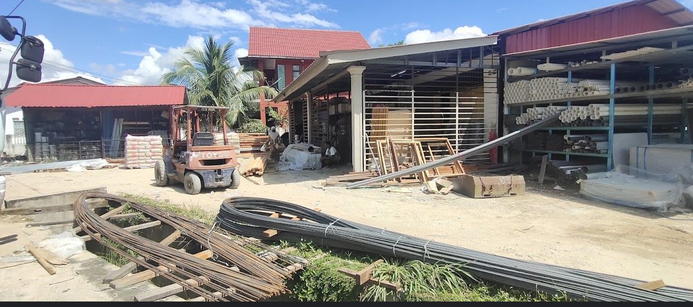

Working Experience
Clerk, MSN MAJU BINA INTERRISE

- My job is that I am responsible for reviewing and compiling files and using office tools such as photocopiers and computers.
- Apart from that, I am also responsible for picking up calls and serving guests or customers.
- I worked only three months while waiting for the final SPM results to be announced.
- Working as a clerk at a company has taught me a lot about the ins and outs of the realm of work.